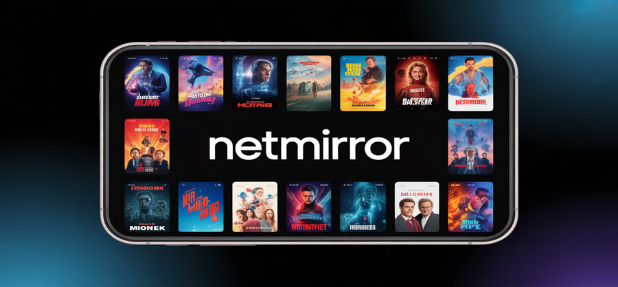

NetMirror has emerged as one of the most versatile screen-mirroring applications available in 2025, giving users a seamless way to cast movies, videos, presentations, and mobile content onto larger screens. As entertainment habits evolve and cross-platform connectivity becomes essential, NetMirror continues to refine its features to meet modern streaming expectations.
1. History and Development of NetMirror
NetMirror began as a lightweight Android casting tool in its early versions, primarily focused on mirroring local photos and videos. Over time, its developers expanded the app to support iOS, Windows, macOS, smart TVs, and Chromecast devices. By 2022, the app integrated real-time wireless protocols, reducing latency significantly. Entering 2025, NetMirror now incorporates adaptive bitrate technology, faster pairing systems, and improved encryption.
2. Key Benefits of Using NetMirror
- Smooth movie streaming with minimal lag.
- Cross-platform compatibility across mobile, PC, and TV.
- Simple wireless setup without cables.
- High-resolution mirroring up to 1080p or 4K.
- Modern encryption for data safety.
- Useful for entertainment, office presentations, and education.
3. How to Use NetMirror (Step-by-Step)
For Android & iOS
- Download NetMirror from Google Play or the App Store.
- Connect your phone and the receiver device to the same Wi-Fi.
- Open the app → choose “Mirror Screen”.
- Select your TV or PC.
- Tap Start Broadcast (iOS) or Start Now (Android).
For Windows & macOS
- Install the desktop version from the official website.
- Launch the app and enable receiver mode.
- Connect via your mobile device using the in-app menu.
For Smart TVs
- Open the NetMirror interface on the TV or enable device discovery.
- Select the TV from your phone to begin mirroring.
4. Comparison Table
| Feature | NetMirror 2025 | AirScreen | ApowerMirror | Chromecast |
|---|---|---|---|---|
| Platform Support | Android, iOS, PC, TV | Android/TV | Android/iOS/PC | Google ecosystem |
| Video Quality | Up to 4K | 1080p | 1080p | Up to 4K |
| Latency | Very Low | Medium | Medium-High | Low |
| Wireless Setup | Easy, auto-pair | Manual Pair | Moderate | Easy |
| Price | Freemium | Freemium | Paid | Device purchase |
| Best For | Movies, presentations, teaching | Basic casting | Productivity | Streaming |
5. Similar Websites / Apps
- AirDroid Cast
- LetsView
- ApowerMirror
- Screen Mirroring Pro
- Reflector
6. User Reviews & Ratings
★ 4.6/5 – “Perfect for Movie Nights”
Author: Daniel Cruz
“NetMirror has become my go-to casting app. The latency is almost invisible, even when streaming long movies.”
★ 4.4/5 – “Reliable for Work Presentations”
Author: Sheila Morrison
“Quick setup, clean visuals, and no interruptions during meetings.”
★ 4.7/5 – “Best Cross-Platform Support”
Author: Arjun Mehta
“It works across all my devices effortlessly—PC, iPhone, and Samsung TV.”
7. Frequently Asked Questions (FAQ)
- Is NetMirror free? It uses a freemium model with optional paid features.
- Does it work without Wi-Fi? Some hotspot modes work, but most features require Wi-Fi.
- Can it stream DRM-protected apps? It cannot bypass restrictions from apps with DRM.
- Is it safe? Yes, with updated encryption for 2025.
- Does it support 4K? Yes, depending on device compatibility.
Conclusion
NetMirror continues to dominate the screen-mirroring field in 2025 thanks to its smooth performance, wide compatibility, and intuitive design. Whether used for movie streaming, teaching, gaming, or business presentations, it offers a reliable and polished mirroring experience.